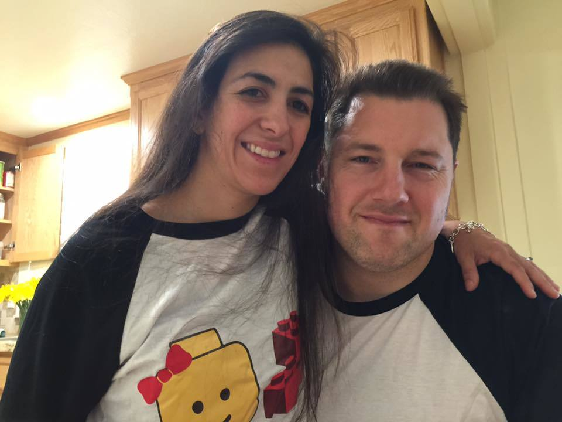
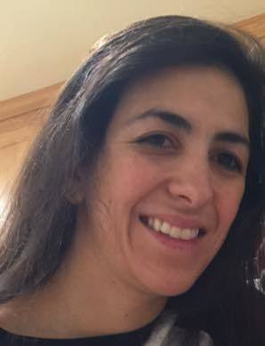
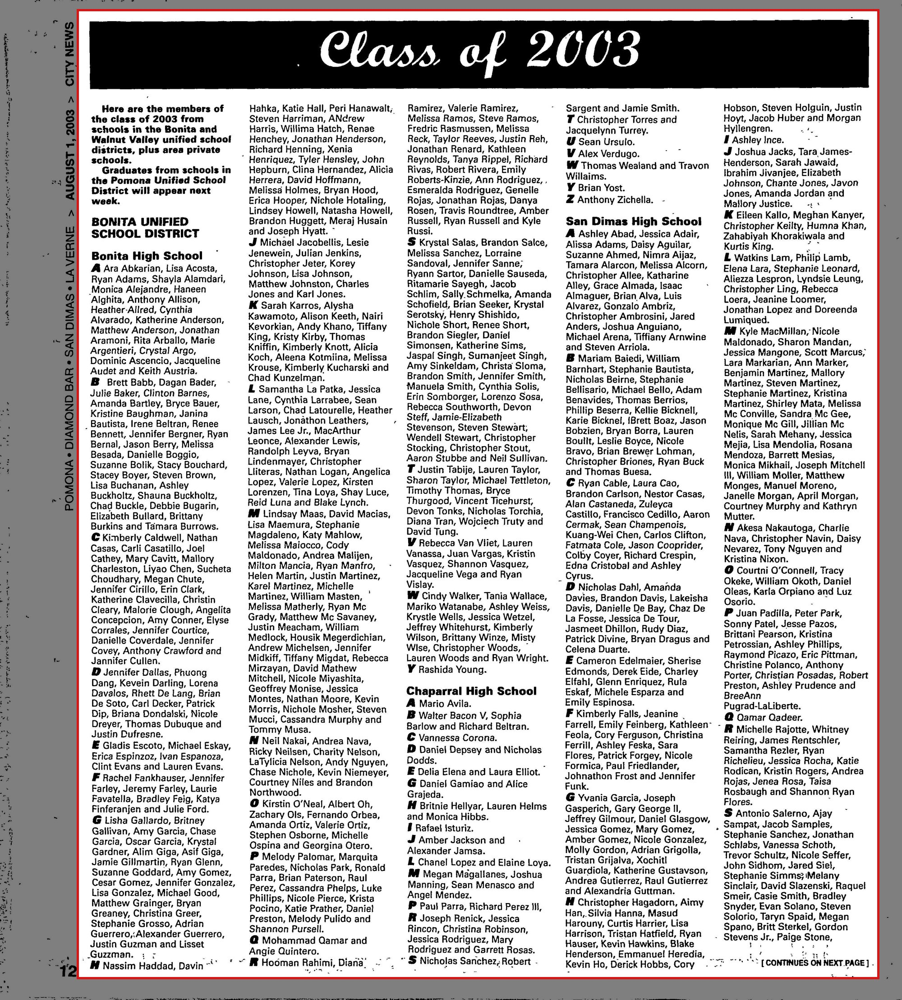

Shayla Nadah Alamdari b. 1985
Wife of Peter.
Living. As for every living relative on this site, the birth date is given by year only, and no current address is shown.
Shayla Nadah Alamdari was born in 1985 in California, United States1,2, the daughter of Fathollah Alamdari and Jeanne Marie Kerbrat14. She married Peter Charles Danenberg Jr. on 14 Feb 2011 (according to the family's 2015 tree)15.
Family
- Parents
- Fathollah Alamdari b. 1963 and Jeanne Marie Kerbrat b. 1964 tradition
- Husband
- Peter Charles Danenberg Jr. b. 1978 · married on 14 Feb 201115
- Children
- Kairos Coriolanus Danenberg b. 2012 documented
- Arete Þórisdóttir Danenberg b. 2013 documented
- Aletheia Saint-Saëns Danenberg b. 2014 documented
- Chronos Zarathustra Danenberg b. 2015 tradition
- Eos Adelaide Danenberg b. 2018 tradition
Life events
| Event | Date | Place and details |
|---|---|---|
| Born | 1985 | California, United States1,2 |
| Lived | bet Oct 1985 and Oct 1986 | Monrovia, California, United States4 |
| Lived | bet Oct 1986 and Jul 2004 | La Verne, California, United States5 |
| Education | Jun 2003 | La Verne, California, United States Graduated from Bonita High School (Bonita Unified School District, La Verne, California) in the Class of 2003.9 |
| Lived | bet 14 Feb 2011 and 2014 | Pasadena, California, United States6 |
| Married | 14 Feb 2011 | with Peter Charles Danenberg Jr. According to the family's 2015 tree15 |
| Lived | bet 2015 and 2026 | Mountain View, California, United States7 |
| Note | bet 2015 and 2026 | Mountain View, California, United States Her YouTube channel, "Shayla Danenberg" (@shayladanenberg7168, channel id UCHcFAlsJphenUX4jD0WbLBw), is the family diary the 2015 newspaper piece describes: 409 videos, 64 subscribers, each one short (14 seconds to a little over a minute) and titled by date — "Saturday: October 8th",…10 |
| Note | 17 Dec 2015 | Mountain View, California, United States Interviewed and quoted at length in a Palo Alto Weekly feature on family winter traditions. In the summer of 2015 she drew up a to-do list of California state beaches and parks to work through with Peter and their four children, then aged three years to five months, as a weekly family tradition,…11 |
| Lived | bet Sep 2022 and 2026 | Palo Alto, California, United States8 |
| Note | bet 2025 and 2026 | Palo Alto, California, United States Competes in the CrossFit Open as a member of CrossFit Palo Alto (CFPA, affiliate 2354), athlete number 2783255. 2025 Open (Women 35–39): 90,921st woman worldwide, 18,687th in her age group, 19,136th in North America West, 4,182nd in her age group in that region, 39,495th in the United States,…12 |
| Note | 29 Oct 2026 | Identifiers, as at 29 Oct 2026. Pinterest https://www.pinterest.com/shaylaalamdari/ , display name "Shayla Danenberg", with boards Activities (683 pins), kid birthday party (597), Food (146), christmas decorations (86), happy place (82). Etsy profile https://www.etsy.com/people/shayladanenberg ,…13 |
| Origin | California, United States According to the family's 2015 tree3 |
Photographs


Records


Sources
- Peter's tree, danenberg.sql, 2007–2015, personae 172, birth.
- Shayla Alamdari, Age 40 in Palo Alto, CA.
Shayla Alamdari. Age 40, Born 1985. Lives in Palo Alto, CA (909) … Shayla has also gone by Shayla Danenberg and Shayla Nadah Alamdari. … Shayla is related to Abdulreza Alamdari, Devan Alamdari, Fathollah Alamdari, Genevieve Nelson and 28 others.
Born in 1985 — the tree had only "1985". Two independent lines agree: the truepeoplesearch index gives "Shayla Alamdari. Age 40, Born 1985", and CrossFit's own competition records move her from the Women 35–39 bracket in the 2025 Open to Women 40–44 in the 2026 Open, which requires a birthday in 1985 or very early 1986. Her published telephone number has the 909 area code (the Inland Empire — La Verne, where her Alamdari grandparents lived), which fits a childhood there.
- Peter's tree, danenberg.sql, 2007–2015, personae 172, provenance.
- Fathollah Alamdari — [address omitted], Monrovia, CA 91016 (Nov 1985 - Dec 1985).
[address omitted] / Monrovia, CA 91016 / Los Angeles County / (Nov 1985 - Dec 1985)
Born in October 1985 in Southern California to Fathollah Alamdari and Jeanne Marie Kerbrat; her father's TruePeopleSearch capture places the family at [address omitted], Monrovia, Los Angeles County, California in November–December 1985 before moving to La Verne in October 1986.
- Shayla Alamdari — [address omitted], La Verne, CA 91750 (Jan 2003 - Jul 2004).
[address omitted] / La Verne, CA 91750 / Los Angeles County / (Jan 2003 - Jul 2004) … [phone omitted]
Raised with her parents in La Verne, Los Angeles County, California (at [address omitted] from Oct 1986 to Dec 1993 and [address omitted] from Oct 1995 to Jun 2018); her own TruePeopleSearch capture records her at [address omitted], La Verne, CA 91750 from January 2003 to July 2004 (after she turned 18) and carries her [phone omitted].
- Shayla Alamdari — [address omitted], Pasadena, CA 91104 (Nov 2011 - Feb 2015).
[address omitted] / Pasadena, CA 91104 / Los Angeles County / (Nov 2011 - Feb 2015)
Married Peter Charles Danenberg Jr. on 14 February 2011 and lived with him and their first two children (Kairos, born 2012, and Arete, born 2013) at [address omitted], Pasadena, California 91104 (recorded on her TruePeopleSearch profile from November 2011 to February 2015) while Peter ran CrossFit Crown City (2011–2014).
- Building sandcastles in December — Local families take holiday festivities outdoors to create special memories.
This past summer, Mountain View resident Shayla Danenberg created a to-do list of state beaches and parks to visit with her husband and their four children, ranging in age from 3 years to 5 months old.
Living in Mountain View, California by December 2015 — the Palo Alto Weekly / Palo Alto Online calls her "Mountain View resident Shayla Danenberg" — and in Palo Alto by 2025–26, where the aggregators place her and where she trains. Her Etsy profile also gives Mountain View. Known married name Shayla Danenberg; the aggregators list "Shayla Danenberg" and "Shayla Nadah Alamdari" as the same person.
- Shayla Alamdari — Current Address: [address omitted], Palo Alto, CA 94303 (Sep 2022 - Nov 2026).
Current Address / [address omitted] / Palo Alto, CA 94303 … Santa Clara County / (Sep 2022 - Nov 2026) … She has lived at [address omitted] in Palo Alto, CA since September 2022.
Moved with her husband Peter and their children to [address omitted], Palo Alto, California 94303 in September 2022 (subsequently purchased in July 2024 per TruePeopleSearch property records), where she trains and competes at CrossFit Palo Alto.
- Class of 2003 (Bonita High School), Inland Valley Daily Bulletin (Ontario, California), 1 August 2003, p. 181.
BONITA UNIFIED SCHOOL DISTRICT Bonita High School A Ara Abkarian, Lisa Acosta, Ryan Adams, Shayla Alamdari, Monica Alejandre, Haneen Alghita, Anthony Allison,
Graduated from Bonita High School (Bonita Unified School District, La Verne, California) in the Class of 2003.
- Shayla Danenberg — YouTube channel.
Shayla Danenberg. [email omitted]. 64 subscribers • 409 videos
Her YouTube channel, "Shayla Danenberg" (@shayladanenberg7168, channel id UCHcFAlsJphenUX4jD0WbLBw), is the family diary the 2015 newspaper piece describes: 409 videos, 64 subscribers, each one short (14 seconds to a little over a minute) and titled by date — "Saturday: October 8th", "Sunday-Monday: October 9-10th", "Wednesday-Thursday: October 12-13th", "Friday: October 14th" in 2016, and still going, "Saturday, December 20, 2025". Ten years of a family's weekends, kept deliberately. (The videos are largely of the children, who are minors; they are not catalogued here.)
- Building sandcastles in December.
For the Danenberg family, it's not just about the destination it's about the experience on the way there.
Interviewed and quoted at length in a Palo Alto Weekly feature on family winter traditions. In the summer of 2015 she drew up a to-do list of California state beaches and parks to work through with Peter and their four children, then aged three years to five months, as a weekly family tradition, and filmed each trip: "After documenting each trip by creating videos using Google Pictures, Danenberg's son seemed more receptive to having conversations about what he did each day." In her own words: "'We said, "Why don't we just get (the kids) some warmer coats and go through the list of beaches and state beaches?" Within our area there are so many different beautiful places to see. We've been doing this for about three months. We're pretty serious about it!' she said, laughing… 'I really want my kids to see these memories. There are so many ways for them to see their memories now with YouTube, photo books and stuff like that. I'm inspired to show them what they do,' she said. 'I think my husband's inspiration is (that) he wants to show them the outdoors. It makes family life more fun.'" In November 2015 the family went to Half Moon Bay, built sandcastles, hunted sand crabs and bought a Christmas tree at Santa's Village in Scotts Valley on the way home over Highway 17.
- Shayla Danenberg | CrossFit — CrossFit Palo Alto, Women (40-44).
Shayla Danenberg · CrossFit Palo Alto · Women (40-44) · 2026 open 16112th worldwide … 2026 … 35th Women CrossFit Palo Alto · 5th Women (40-44) CrossFit Palo Alto · 2025 … 29th Women CrossFit Palo Alto · 6th Women (35-39) CrossFit Palo Alto
Competes in the CrossFit Open as a member of CrossFit Palo Alto (CFPA, affiliate 2354), athlete number 2783255. 2025 Open (Women 35–39): 90,921st woman worldwide, 18,687th in her age group, 19,136th in North America West, 4,182nd in her age group in that region, 39,495th in the United States, 8,477th in her age group nationally, 29th woman at CrossFit Palo Alto and 6th in her age group at the affiliate. 2026 Open (Women 40–44): 99,103rd woman worldwide, 16,112th in her age group, 19,607th North America West, 3,689th in her age group in that region, 38,932nd in the United States, 7,251st in her age group nationally, 35th woman at CrossFit Palo Alto, 5th in her age group at the affiliate. No benchmark lifts are published on the profile.
- Shayla Danenberg (shaylaalamdari) — Profile.
Shayla Danenberg ; Activities · 683 Pins · 4y ; Food · 146 Pins · 4y ; kid birthday party · 597 Pins · 5y
Identifiers, as at 29 Oct 2026. Pinterest https://www.pinterest.com/shaylaalamdari/ , display name "Shayla Danenberg", with boards Activities (683 pins), kid birthday party (597), Food (146), christmas decorations (86), happy place (82). Etsy profile https://www.etsy.com/people/shayladanenberg , "Mountain View, CA", 1 following, 4 followers. YouTube @shayladanenberg7168 / channel UCHcFAlsJphenUX4jD0WbLBw. CrossFit athlete 2783255. MyLife profile e4728700848798 ("Shayla Nadah Alamdari – Mountain View, CA"). Published telephone [phone omitted] (truepeoplesearch). An e-mail of [email omitted] is indexed against her by unmask.com — that is her father Fathollah's address, presumably from a shared household record, and should not be treated as hers. She has given twice to the GoFundMe "Help Fund Reality Backstabbers' Storage Needs" ($25 and $27, c. mid-2026). No LinkedIn, X, ORCID or public Facebook profile was found; Instagram could not be checked (it does not resolve in this machine's DNS).
- Peter's tree, danenberg.sql, 2007–2015, parentages 117.
- Peter's tree, danenberg.sql, 2007–2015, unions 15, inauguration.